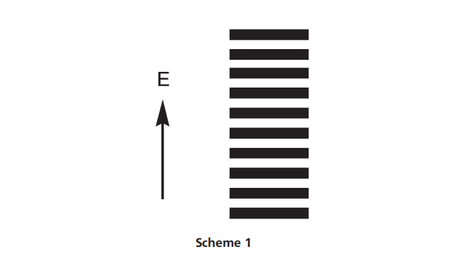
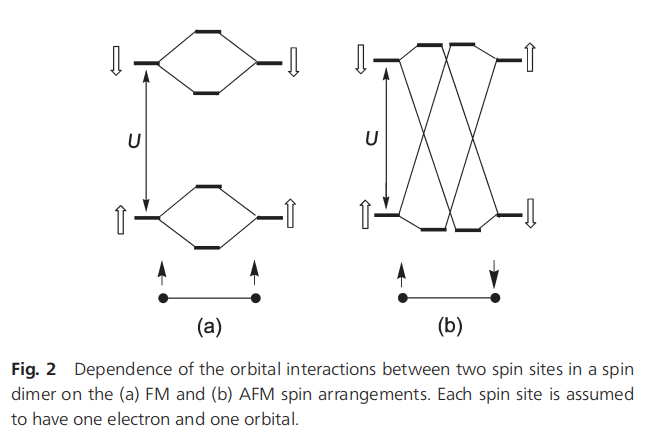

磁性固体磁能级与自旋哈密顿量研究
摘要
磁性固体的磁能级在能量上呈紧密堆积特征，这源于磁离子间较弱的相互作用。在描述此类体系的磁学性质时，必须通过适当自旋哈密顿量 来构建其磁能谱。本文基于第一性原理电子结构计算，从能量映射分析角度探讨如何确定所需自旋哈密顿量，并系统性梳理磁性固体研究中的核心概念与现象。研究强调应从磁能级与电子结构视角出发，建立基于自旋晶格 （即强磁键重复模式）的自旋哈密顿量。其中需通过能量映射分析评估海森堡自旋交换作用，对于DM spin exchange、磁晶各向异性能量等较弱能量项也可采用相同方法处理。特别指出，通过将过渡金属磁性离子分裂的d能级视为未受扰动态并结合自旋-轨道耦合(SOC)，可有效解释其自旋取向机制。
当两个相邻自旋位点处于化学不等价状态 时，其间的DM交换强度可与海森堡自旋交换达到相当量级，此现象在微扰理论框架下具有重要研究价值。对于稀土阳离子与过渡金属阳离子间的DM相互作用，其主要由稀土阳离子的磁轨道特性决定。这种特殊相互作用机制的形成源于：稀土阳离子独特的磁轨道构型、晶体场效应与自旋-轨道耦合的协同作用，以及不同阳离子间轨道杂化的空间对称性约束。
1. 引言
与导致化学键合的强轨道相互作用相比，磁性离子间产生磁性的相互作用极其微弱。因此，磁态在能量上紧密排列（如示意图1所示），这使得通过关注少数个别磁能级来理解系统的磁性变得不可能。这与强轨道相互作用的情况形成鲜明对比——在强轨道相互作用中，化合物的结构和反应性可以通过其前线轨道得到合理解释。理解系统磁性所需的是其磁激发能谱，这需要用少量自旋交换参数定义的自旋哈密顿量来描述。自旋交换路径（或称磁键）的几何模式称为自旋晶格。此类模型哈密顿量的价值在于，通过以最小磁键集合定义的自旋晶格，捕捉观测磁性背后的物理和化学本质。对于局域电子体系的磁性，一般自旋哈密顿量可表示为：
H ^ spin = ∑ i < j J i j S ^ i ⋅ S ^ j + ∑ i < j D ⃗ i j ⋅ ( S ^ i × S ^ j ) + ∑ i A i S i z 2 + ∑ i < j K i j ( S ^ i ⋅ S ^ j ) 2 \hat{H}_{\text{spin}} = \sum_{i<j} J_{ij} \hat{S}_i \cdot \hat{S}_j + \sum_{i<j} \vec{D}_{ij} \cdot (\hat{S}_i \times \hat{S}_j) + \sum_i A_i S_{iz}^2 + \sum_{i<j} K_{ij} (\hat{S}_i \cdot \hat{S}_j)^2
H ^ spin = i < j ∑ J ij S ^ i ⋅ S ^ j + i < j ∑ D ij ⋅ ( S ^ i × S ^ j ) + i ∑ A i S i z 2 + i < j ∑ K ij ( S ^ i ⋅ S ^ j ) 2
其中第一项为对称交换相互作用 ，第二项为反对称交换相互作用 ，第三项为单离子各向异性 ，最后一项为双二次相互作用 。对称交换相互作用通常称为海森堡交换相互作用，反对称交换相互作用称为DM相互作用（Dzyaloshinskii-Moriya相互作用）。DM相互作用和单离子各向异性均源于自旋轨道耦合。双二次相互作用可通过哈伯德模型的四阶微扰推导得到。需注意，在描述磁性系统的观测特性时，自旋哈密顿量不要求包含全部四项。

化学家熟悉的轨道相互作用图像对理解自旋晶格（即确定系统自旋哈密顿量的关键）具有决定性作用。需强调强、弱轨道相互作用的重要区别：一般而言，磁性系统中的过渡金属阳离子 M x + M^{x+} M x + x x x n = 4 − 6 n=4-6 n = 4 − 6 M x + M^{x+} M x + n _n n n d nd n d n p np n p n d nd n d n p np n p 1 ^1 1
本文旨在简要综述磁性固体文献中涉及的重要概念与现象，并讨论如何通过基于第一性原理电子结构计算的能量映射分析来评估模型哈密顿量参数。本文面向对磁性描述术语及数学处理仅有基础知识的读者，因此将从电子结构的定性视角展开讨论。在下文中，轨道角动量 L ⃗ \vec{L} L S ⃗ \vec{S} S L ^ \hat{L} L ^ S ^ \hat{S} S ^
2. 磁性绝缘态
A. 电子结构
含磁性离子体系的磁性本质上与其电子能量受外磁场影响的方式相关。由于含磁性离子的分子和晶体具有开壳层电子结构，理解此类电子结构的形成机制至关重要。目前，分子和晶体的电子结构主要通过—— 进行描述。2 ^2 2 非自旋极化DFT 中，系统的每个能级可容纳两个电子（因上自旋与下自旋能级被视为简并，如示意图2（左））。因此，给定固体的能带由上自旋与下自旋子带（能量简并）组成。任何具有部分填充能带的固体（图1a），其最高占据能级与最低未占据能级间不存在能隙，故被预测为无磁性金属。显然，此预测与实验观测矛盾——部分填充能带的固体可以是磁性绝缘体3 , 4 ^3,4 3 , 4

非自旋极化DFT无法描述磁性绝缘体的问题，可通过自旋极化DFT 部分解决。该方法允许上自旋与下自旋子带的空间轨道不同，进而能量分裂。然而，对多数磁性绝缘体，自旋极化DFT给出的子带分裂不足以产生带隙（图1c）。此缺陷（即带隙低估）可通过经验性方法——自旋极化DFT + U 5 ^5 5 U eff = U − J U^{\text{eff}} = U - J U eff = U − J U U U J J J n d nd n d
DFT + U 计算存在两种略有差异的方法：
Dudarev 等人的方法5 a ^{5a} 5 a U − J U - J U − J
Liechtenstein 等人的方法5 , 6 ^{5,6} 5 , 6 U U U J J J J J J 6 ^{6} 6
当前DFT技术尚无法预测部分填充能带固体是金属还是磁性绝缘体。但若实验已知其属性，可通过自旋极化DFT + U 计算确定导致金属态或磁性绝缘态的 U eff U^{\text{eff}} U eff U eff U^{\text{eff}} U eff U eff U^{\text{eff}} U eff n d nd n d U eff U^{\text{eff}} U eff n d nd n d 5 d < 4 d ≪ 3 d 5d < 4d \ll 3d 5 d < 4 d ≪ 3 d 杂化泛函方法 7 − 9 ^{7-9} 7 − 9
DFT + U 在特定态（如磁性离子的n d nd n d
杂化泛函方法将精确哈特里-福克交换势混合到常规DFT泛函中，影响系统中所有态（包括非磁性配体的n p np n p 10 ^{10} 10
B.自旋排列对带隙的影响
在自旋极化DFT + U方法中，每个自旋位点的上自旋与下自旋n d nd n d U U U
铁磁（FM）排列 （图2a）：两自旋位点的上自旋能级均比下自旋低U U U 反铁磁（AFM）排列 （图2b）：上自旋位点的上自旋能级低U U U
两自旋位点间仅同自旋能级发生轨道相互作用。因此，FM排列为简并轨道相互作用，AFM排列为非简并轨道相互作用。若位点1和2的电子分别由轨道ϕ 1 \phi_1 ϕ 1 ϕ 2 \phi_2 ϕ 2 t t t t = ⟨ ϕ 1 ∣ H ^ eff ∣ ϕ 2 ⟩ t = \langle\phi_1|\hat{H}^{\text{eff}}|\phi_2\rangle t = ⟨ ϕ 1 ∣ H ^ eff ∣ ϕ 2 ⟩ H ^ eff \hat{H}^{\text{eff}} H ^ eff t t t t 2 / U t^2/U t 2 / U t t t t 2 / U t^2/U t 2 / U
FM排列 ：上自旋与下自旋能带分离宽度为W = 2 z t W=2zt W = 2 z t z z z U > W U > W U > W U − W U-W U − W U < W U < W U < W AFM排列 ：能带宽度W = 2 z t 2 / U W=2zt^2/U W = 2 z t 2 / U t 2 / U t^2/U t 2 / U t t t
3D立方晶格可能采取多种AFM构型（如G型、C型、A型，示意图3）。G型在三个方向具有AFM相互作用，C型在两个方向，A型在一个方向。若这些AFM态均存在带隙，其带隙大小顺序为G型 > C型 > A型。因此，理想简单立方3D磁性体系中，G型和C型AFM态可能有带隙，而A型可能无；或仅G型有带隙。这种带隙对AFM类型的依赖性解释了某些反铁磁体（如NaOsO3 _3 3 11 , 12 ^{11,12} 11 , 12 2 _2 2 2 _2 2 7 _7 7 13 , 14 ^{13,14} 13 , 14 Slater转变 15 ^{15} 15
3. 磁矩与能级
A. 磁化与磁化率
含磁性离子化合物的磁性主要由离子的磁矩 μ ⃗ \vec{\mu} μ μ ⃗ \vec{\mu} μ E E E H ⃗ \vec{H} H
μ ⃗ = − ∂ E ∂ H ⃗ (1) \vec{\mu} = -\frac{\partial E}{\partial \vec{H}} \tag{1}
μ = − ∂ H ∂ E ( 1 )
若磁矩在所有方向均非零，则系统为各向同性；若仅在一个方向非零，则为单轴各向异性。磁性离子的磁矩由轨道角动量 L ⃗ \vec{L} L S ⃗ \vec{S} S
μ ⃗ = − ( L ⃗ + g S ⃗ ) μ B (2) \vec{\mu} = -(\vec{L} + g\vec{S})\mu_B \tag{2}
μ = − ( L + g S ) μ B ( 2 )
其中 μ B \mu_B μ B g g g g g g g = 2 g=2 g = 2 L ⃗ ≈ 0 \vec{L} \approx 0 L ≈ 0
μ ⃗ ≈ − 2 S ⃗ μ B \vec{\mu} \approx -2\vec{S}\mu_B
μ ≈ − 2 S μ B
磁性化合物的实验关注量是磁化强度 M ⃗ \vec{M} M （单位体积的平均磁矩）。磁化强度随温度 T T T H ⃗ \vec{H} H M ⃗ = 0 \vec{M}=0 M = 0
弱场条件下，磁化强度与外场成正比：
M ⃗ = χ H ⃗ \vec{M} = \chi \vec{H}
M = χ H
其中比例系数 χ \chi χ 磁化率 。顺磁区（高温）的磁化率温度依赖遵循居里-外斯定律：
χ = C T − θ 或 1 χ = 1 C T − θ C \chi = \frac{C}{T - \theta} \quad \text{或} \quad \frac{1}{\chi} = \frac{1}{C} T - \frac{\theta}{C}
χ = T − θ C 或 χ 1 = C 1 T − C θ
其中 C C C θ \theta θ
有效磁矩 μ eff \mu_{\text{eff}} μ eff （单位 μ B \mu_B μ B μ eff = 2.828 χ m T = 2 S ( S + 1 ) \mu_{\text{eff}} = 2.828 \sqrt{\chi_m T} = 2\sqrt{S(S+1)}
μ eff = 2.828 χ m T = 2 S ( S + 1 )
反映顺磁区的自旋量子数 S S S 居里-外斯温度 θ \theta θ ：
θ = 0 \theta = 0 θ = 0 θ < 0 \theta < 0 θ < 0 θ > 0 \theta > 0 θ > 0
在平均场近似下16 ^{16} 16 θ \theta θ J i J_i J i
θ = S ( S + 1 ) 3 k B ∑ i z i J i \theta = \frac{S(S+1)}{3k_B} \sum_i z_{i}J_i
θ = 3 k B S ( S + 1 ) i ∑ z i J i
其中 z i z_i z i i i i
B. 磁性能级的实验研究
磁性系统的低能激发态（示意图1）可通过玻尔兹曼分布热占据。由于能级密集，物理性质是多个态的加权平均。磁化率 χ \chi χ C p , m a g C_{\rm p,mag} C p , mag M ⃗ \vec{M} M
直接探测单个激发态需在极低温下进行非弹性中子散射实验 。通过测量冷中子能量损失，可确定磁激发能。实验获得的自旋波色散关系 （吸收能与动量转移 Q Q Q 17 ^{17} 17
4. 海森堡自旋交换的映射分析
A. 孤立自旋二聚体本征态的应用1 , 18 ^{1, 18} 1 , 18
对于半填充能带且大 U U U 19 ^{19} 19
H ^ s p i n = J S ^ 1 ⋅ S ^ 2 , (7) \hat{H}_{\rm spin}=J\hat{S}_{1}\cdot\hat{S}_{2}, \tag{7}
H ^ spin = J S ^ 1 ⋅ S ^ 2 , ( 7 )
其中 J J J
自旋哈密顿量的各向同性
自旋哈密顿量描述各向同性磁性系统，因为能量包含三个笛卡尔分量：
S ⃗ 1 ⋅ S ⃗ 2 = S 1 x S 2 x + S 1 y S 2 y + S 1 z S 2 z . \vec{S}_{1}\cdot\vec{S}_{2}=S_{1x}S_{2x}+S_{1y}S_{2y}+S_{1z}S_{2z}.
S 1 ⋅ S 2 = S 1 x S 2 x + S 1 y S 2 y + S 1 z S 2 z .
当 J > 0 J>0 J > 0 θ = 180 ∘ \theta=180^\circ θ = 18 0 ∘ J < 0 J<0 J < 0 θ = 0 ∘ \theta=0^\circ θ = 0 ∘
自旋二聚体的本征态
自旋位点 i i i = 1 , 2 =1,\,2 = 1 , 2 α = ∣ 1 2 , 1 2 ⟩ \alpha=\left|\frac{1}{2},\frac{1}{2}\right\rangle α = 2 1 , 2 1 ⟩ β = ∣ 1 2 , − 1 2 ⟩ \beta=\left|\frac{1}{2},-\frac{1}{2}\right\rangle β = 2 1 , − 2 1 ⟩
S ^ z ∣ S , S z ⟩ = S z ∣ S , S z ⟩ S ^ + ∣ S , S z ⟩ = S ( S + 1 ) − S z ( S z + 1 ) ∣ S , S z + 1 ⟩ S ^ − ∣ S , S z ⟩ = S ( S + 1 ) − S z ( S z − 1 ) ∣ S , S z − 1 ⟩ (8) \hat{S}_{z}|S,S_{z}\rangle= S_{z}|S,S_{z}\rangle \\
\hat{S}_{+}|S,S_{z}\rangle= \sqrt{S(S+1)-S_{z}(S_{z}+1)}|S,S_{z}+1\rangle \tag{8} \\
\hat{S}_{-}|S,S_{z}\rangle= \sqrt{S(S+1)-S_{z}(S_{z}-1)}|S,S_{z}-1\rangle
S ^ z ∣ S , S z ⟩ = S z ∣ S , S z ⟩ S ^ + ∣ S , S z ⟩ = S ( S + 1 ) − S z ( S z + 1 ) ∣ S , S z + 1 ⟩ S ^ − ∣ S , S z ⟩ = S ( S + 1 ) − S z ( S z − 1 ) ∣ S , S z − 1 ⟩ ( 8 )
其中 S ^ + = S ^ x + i S ^ y \hat{S}_{+}=\hat{S}_{x}+i\hat{S}_{y} S ^ + = S ^ x + i S ^ y S ^ − = S ^ x − i S ^ y \hat{S}_{-}=\hat{S}_{x}-i\hat{S}_{y} S ^ − = S ^ x − i S ^ y S ^ ( i ) = i S ^ x ( i ) + j S ^ y ( i ) + k ^ S ^ z ( i ) \hat{S}(i)=i\hat{S}_{x}(i)+j\hat{S}_{y}(i)+\hat{k}\hat{S}_{z}(i) S ^ ( i ) = i S ^ x ( i ) + j S ^ y ( i ) + k ^ S ^ z ( i ) i = 1 , 2 i=1,\,2 i = 1 , 2
H ^ s p i n = J [ S ^ x ( 1 ) S ^ x ( 2 ) + S ^ y ( 1 ) S ^ y ( 2 ) + S ^ z ( 1 ) S ^ z ( 2 ) ] = J S ^ x ( 1 ) S ^ z ( 2 ) + J 2 [ S ^ + ( 1 ) S ^ − ( 2 ) + S ^ − ( 1 ) S ^ + ( 2 ) ] (9) \hat{H}_{\rm spin}= J\left[\hat{S}_{x}(1)\hat{S}_{x}(2)+\hat{S}_{y}(1)\hat{S}_{y}(2)+\hat{S}_{z}(1)\hat{S}_{z}(2)\right] \tag{9} \\
= J\hat{S}_{x}(1)\hat{S}_{z}(2)+\frac{J}{2}\left[\hat{S}_{+}(1)\hat{S}_{-}(2)+\hat{S}_{-}(1)\hat{S}_{+}(2)\right]
H ^ spin = J [ S ^ x ( 1 ) S ^ x ( 2 ) + S ^ y ( 1 ) S ^ y ( 2 ) + S ^ z ( 1 ) S ^ z ( 2 ) ] = J S ^ x ( 1 ) S ^ z ( 2 ) + 2 J [ S ^ + ( 1 ) S ^ − ( 2 ) + S ^ − ( 1 ) S ^ + ( 2 ) ] ( 9 )
自旋二聚体的本征态为单重态 ∣ S ⟩ |S\rangle ∣ S ⟩ ∣ T ⟩ |T\rangle ∣ T ⟩
∣ S ⟩ = 1 2 [ α ( 1 ) β ( 2 ) − β ( 1 ) α ( 2 ) ] |S\rangle=\frac{1}{\sqrt{2}}[\alpha(1)\beta(2)-\beta(1)\alpha(2)] ∣ S ⟩ = 2 1 [ α ( 1 ) β ( 2 ) − β ( 1 ) α ( 2 )] ∣ T ⟩ = α ( 1 ) α ( 2 ) |T\rangle=\alpha(1)\alpha(2) ∣ T ⟩ = α ( 1 ) α ( 2 ) β ( 1 ) β ( 2 ) \beta(1)\beta(2) β ( 1 ) β ( 2 ) 1 2 [ α ( 1 ) β ( 2 ) + β ( 1 ) α ( 2 ) ] \frac{1}{\sqrt{2}}[\alpha(1)\beta(2)+\beta(1)\alpha(2)] 2 1 [ α ( 1 ) β ( 2 ) + β ( 1 ) α ( 2 )]
对称性破缺态（如 Néel 态 α ( 1 ) β ( 2 ) \alpha(1)\beta(2) α ( 1 ) β ( 2 ) β ( 1 ) α ( 2 ) \beta(1)\alpha(2) β ( 1 ) α ( 2 ) H ^ s p i n \hat{H}_{\rm spin} H ^ spin ∣ S ⟩ |S\rangle ∣ S ⟩ ∣ T ⟩ |T\rangle ∣ T ⟩
单重态与三重态的能量差
通过式 (9) 计算 ∣ T ⟩ |T\rangle ∣ T ⟩ ∣ S ⟩ |S\rangle ∣ S ⟩
E s p i n ( T ) = J 4 , E s p i n ( S ) = − 3 J 4 E_{\rm spin}(T)=\frac{J}{4}, \quad E_{\rm spin}(S)=-\frac{3J}{4}
E spin ( T ) = 4 J , E spin ( S ) = − 4 3 J
能量差为：
Δ E s p i n = E s p i n ( T ) − E s p i n ( S ) = J , (10) \Delta E_{\rm spin}=E_{\rm spin}(T)-E_{\rm spin}(S)=J, \tag{10}
Δ E spin = E spin ( T ) − E spin ( S ) = J , ( 10 )
即自旋交换常数 J J J J > 0 J>0 J > 0 J < 0 J<0 J < 0
电子结构描述
自旋二聚体的电子哈密顿量为：
H ^ e l e c = h ^ ( 1 ) + h ^ ( 2 ) + 1 r 12 , (11) \hat{H}_{\rm elec}=\hat{h}(1)+\hat{h}(2)+\frac{1}{r_{12}}, \tag{11}
H ^ elec = h ^ ( 1 ) + h ^ ( 2 ) + r 12 1 , ( 11 )
其中 h ^ ( i ) \hat{h}(i) h ^ ( i ) r 12 r_{12} r 12 ϕ 1 \phi_1 ϕ 1 ϕ 2 \phi_2 ϕ 2 Δ e \Delta e Δ e
ψ 1 ≈ ϕ 1 + ϕ 2 2 , ψ 2 ≈ ϕ 1 − ϕ 2 2 （示意图 6） \psi_{1}\approx\frac{\phi_{1}+\phi_{2}}{\sqrt{2}}, \quad \psi_{2}\approx\frac{\phi_{1}-\phi_{2}}{\sqrt{2}} \quad \text{（示意图 6）}
ψ 1 ≈ 2 ϕ 1 + ϕ 2 , ψ 2 ≈ 2 ϕ 1 − ϕ 2 （示意图 6 ）
组态相互作用与能量差
单重态 Ψ S \Psi_S Ψ S Ψ i ′ \Psi'_i Ψ i ′ i = 1 , 2 i=1,\,2 i = 1 , 2
Ψ i = C 11 Φ 1 + C 22 Φ 2 ( i = 1 , 2 ) , (12) \Psi_{i}=C_{11}\Phi_{1}+C_{22}\Phi_{2} \quad (i=1,2), \tag{12}
Ψ i = C 11 Φ 1 + C 22 Φ 2 ( i = 1 , 2 ) , ( 12 )
其中 Φ 1 \Phi_1 Φ 1 Φ 2 \Phi_2 Φ 2 Ψ ↑ \Psi_{\uparrow} Ψ ↑ ψ 1 \psi_1 ψ 1 ψ 2 \psi_2 ψ 2
Δ E C I = E C I ( S ) − E C I ( T ) = − 2 K 12 + ( Δ e ) 2 U e f f , (13) \Delta E_{\rm CI}=E_{\rm CI}(S)-E_{\rm CI}(T)=-2K_{12}+\frac{(\Delta e)^2}{U^{\rm eff}}, \tag{13}
Δ E CI = E CI ( S ) − E CI ( T ) = − 2 K 12 + U eff ( Δ e ) 2 , ( 13 )
其中：
K 12 = ⟨ ϕ 1 ( 1 ) ϕ 2 ( 2 ) ∣ 1 r 12 ∣ ϕ 2 ( 1 ) ϕ 1 ( 2 ) ⟩ K_{12}=\langle\phi_{1}(1)\phi_{2}(2)|\frac{1}{r_{12}}|\phi_{2}(1)\phi_{1}(2)\rangle K 12 = ⟨ ϕ 1 ( 1 ) ϕ 2 ( 2 ) ∣ r 12 1 ∣ ϕ 2 ( 1 ) ϕ 1 ( 2 )⟩ U e f f = J 11 − J 12 U^{\rm eff}=J_{11}-J_{12} U eff = J 11 − J 12 J 11 J_{11} J 11 J 12 J_{12} J 12
将 Δ E s p i n \Delta E_{\rm spin} Δ E spin Δ E C I \Delta E_{\rm CI} Δ E CI
J = Δ E C I = − 2 K 12 + ( Δ e ) 2 U e f f . (14) J=\Delta E_{\rm CI}=-2K_{12}+\frac{(\Delta e)^2}{U^{\rm eff}}. \tag{14}
J = Δ E CI = − 2 K 12 + U eff ( Δ e ) 2 . ( 14 )
自旋交换的分量分解
由于排斥项 K 12 K_{12} K 12 U e f f U^{\rm eff} U eff J J J J F J_{\rm F} J F < 0 <0 < 0 J A F J_{\rm AF} J AF > 0 >0 > 0
J = J F + J A F , (15) J=J_{\rm F}+J_{\rm AF}, \tag{15}
J = J F + J AF , ( 15 )
其中：
J_{\rm F}=-2K_{12} \tag{16a} \\
J_{\rm AF}=\frac{(\Delta e)^2}{U^{\rm eff}} \tag{16b}
FM 分量 ：随重叠密度 ϕ 1 ϕ 2 \phi_1\phi_2 ϕ 1 ϕ 2 K 12 K_{12} K 12 AFM 分量 ：随重叠积分 ⟨ ϕ 1 ∣ ϕ 2 ⟩ \langle\phi_1|\phi_2\rangle ⟨ ϕ 1 ∣ ϕ 2 ⟩ Δ e \Delta e Δ e U e f f U^{\rm eff} U eff
B. 对称性破缺态在一般磁性固体中的应用
对于一般磁性体系，确定 H ^ elec \hat{H}_{\text{elec}} H ^ elec H ^ spin \hat{H}_{\text{spin}} H ^ spin H ^ elec \hat{H}_{\text{elec}} H ^ elec H ^ spin \hat{H}_{\text{spin}} H ^ spin 对称性破缺态 ，其相对能量可以通过二者的组合关系轻松确定。通过 DFT 计算，自旋二聚体的能量映射分析利用高自旋态（∣ H S ⟩ |HS\rangle ∣ H S ⟩ ∣ B S ⟩ |BS\rangle ∣ BS ⟩ H ^ elec \hat{H}_{\text{elec}} H ^ elec H ^ spin \hat{H}_{\text{spin}} H ^ spin 1 , 21 − 25 ^{1,21-25} 1 , 21 − 25
∣ H S ⟩ = α ( 1 ) α ( 2 ) 或 β ( 1 ) β ( 2 ) ∣ B S ⟩ = α ( 1 ) β ( 2 ) 或 β ( 1 ) α ( 2 ) (17) |HS\rangle = \alpha(1)\alpha(2) \text{ 或 } \beta(1)\beta(2) \tag{17} \\
|BS\rangle = \alpha(1)\beta(2) \text{ 或 } \beta(1)\alpha(2)
∣ H S ⟩ = α ( 1 ) α ( 2 ) 或 β ( 1 ) β ( 2 ) ∣ BS ⟩ = α ( 1 ) β ( 2 ) 或 β ( 1 ) α ( 2 ) ( 17 )
其中 ∣ H S ⟩ |HS\rangle ∣ H S ⟩ ∣ B S ⟩ |BS\rangle ∣ BS ⟩
E spin ( H S ) = J 4 , E spin ( B S ) = − J 4 E_{\text{spin}}(HS) = \frac{J}{4}, \quad E_{\text{spin}}(BS) = -\frac{J}{4}
E spin ( H S ) = 4 J , E spin ( BS ) = − 4 J
因此能量差为：
Δ E spin = E spin ( H S ) − E spin ( B S ) = J 2 (18) \Delta E_{\text{spin}} = E_{\text{spin}}(HS) - E_{\text{spin}}(BS) = \frac{J}{2} \tag{18}
Δ E spin = E spin ( H S ) − E spin ( BS ) = 2 J ( 18 )
通过 DFT 计算 ∣ H S ⟩ |HS\rangle ∣ H S ⟩ ∣ B S ⟩ |BS\rangle ∣ BS ⟩ E DFT ( H S ) E_{\text{DFT}}(HS) E DFT ( H S ) E DFT ( B S ) E_{\text{DFT}}(BS) E DFT ( BS )
Δ E DFT = E DFT ( H S ) − E DFT ( B S ) (19) \Delta E_{\text{DFT}} = E_{\text{DFT}}(HS) - E_{\text{DFT}}(BS) \tag{19}
Δ E DFT = E DFT ( H S ) − E DFT ( BS ) ( 19 )
将 Δ E spin \Delta E_{\text{spin}} Δ E spin Δ E DFT \Delta E_{\text{DFT}} Δ E DFT
J 2 = Δ E DFT (20) \frac{J}{2} = \Delta E_{\text{DFT}} \tag{20}
2 J = Δ E DFT ( 20 )
能量映射方法步骤
1. 选择交换路径
根据磁性离子的几何排列及超交换路径（如 M-L-M 或 M-L···L-M），选择 N N N J i j J_{ij} J ij J 1 , J 2 , … , J N J_1, J_2, \dots, J_N J 1 , J 2 , … , J N
2. 构建有序自旋态
构造 N + 1 N+1 N + 1 共线自旋态 （对称性破缺态），其中每对自旋为 FM 或 AFM 排列。对于含 N i N_i N i N j N_j N j i i i j j j
E F M = + S i S j J i j , E A F M = − S i S j J i j (22) E_{\rm FM} = +S_i S_j J_{ij}, \quad E_{\rm AFM} = -S_i S_j J_{ij} \tag{22}
E FM = + S i S j J ij , E AFM = − S i S j J ij ( 22 )
总自旋交换能通过累加所有两体相互作用得到，并计算相对能量：
Δ E s p i n ( i − 1 ) = E s p i n ( i ) − E s p i n ( 1 ) ( i = 2 , 3 , … , N + 1 ) (23) \Delta E_{\rm spin}(i-1) = E_{\rm spin}(i) - E_{\rm spin}(1) \quad (i=2,3,\dots,N+1) \tag{23}
Δ E spin ( i − 1 ) = E spin ( i ) − E spin ( 1 ) ( i = 2 , 3 , … , N + 1 ) ( 23 )
3. DFT+U 计算
通过 DFT+U 方法计算 N + 1 N+1 N + 1 E D F T ( i ) E_{\rm DFT}(i) E DFT ( i ) U e f f U^{\rm eff} U eff
J A F = ( Δ e ) 2 U e f f （式 16b） J_{\rm AF} = \frac{(\Delta e)^2}{U^{\rm eff}} \quad \text{（式 16b）}
J AF = U eff ( Δ e ) 2 （式 16b ）
4. 参数拟合
通过最小二乘法将 Δ E D F T \Delta E_{\rm DFT} Δ E DFT Δ E s p i n \Delta E_{\rm spin} Δ E spin
Δ E D F T ( i − 1 ) = Δ E s p i n ( i − 1 ) ( i = 2 , 3 , … , N + 1 ) (25) \Delta E_{\rm DFT}(i-1) = \Delta E_{\rm spin}(i-1) \quad (i=2,3,\dots,N+1) \tag{25}
Δ E DFT ( i − 1 ) = Δ E spin ( i − 1 ) ( i = 2 , 3 , … , N + 1 ) ( 25 )
挑战与验证
自相互作用误差
常规 DFT 泛函存在自相互作用误差 ，导致轨道离域化并高估自旋交换作用。DFT+U 方法通过添加哈特里-福克项局域化磁性轨道，但 U U U J J J 26 ^{26} 26
非唯一性问题
实验拟合的 J i j J_{ij} J ij 27 ^{27} 27
居里-外斯温度验证
通过计算居里-外斯温度 θ \theta θ
θ = S ( S + 1 ) 3 k B ∑ i z i J i \theta = \frac{S(S+1)}{3k_B} \sum_i z_i J_i
θ = 3 k B S ( S + 1 ) i ∑ z i J i
但实验与计算结果的一致性并非唯一标准，需综合物理意义判断。
总结
自旋哈密顿量的核心目标是以最简参数集定量描述实验观测（如 χ ( T ) \chi(T) χ ( T ) C p , m a g C_{\rm p,mag} C p , mag
5. 海森堡自旋交换的定性方面
给定一种由 M L n ML_n M L n x x x M + M^+ M + M M M L L L M M M M M M L L L L L L M M M
支配M M M L L L M M M 28 , 29 ^{28,29} 28 , 29 M M M L L L L L L M M M 1 ^{1} 1 M M M L L L L L L M M M M M M L L L M M M M M M L L L L L L M M M M + M^+ M + M M M p p p L L L n p np n p M M M L L L L L L M M M L L L L L L L L L M M M L L L L L L M M M
以L i C u V O 4 LiCuVO_4 L i C u V O 4 C u O 2 CuO_2 C u O 2 C u O 2 CuO_2 C u O 2 b b b a a a V O 4 VO_4 V O 4 L i C u V O 4 LiCuVO_4 L i C u V O 4 C u 2 + Cu^{2+} C u 2 + S = 1 / 2 S=1/2 S = 1/2 d 1 d^1 d 1 V 5 + V^{5+} V 5 + S = 1 / 2 S=1/2 S = 1/2 d 0 d^0 d 0 C u O 2 CuO_2 C u O 2 J n n J_{nn} J nn J n n n J_{nnn} J nnn J ⊥ J_{\perp} J ⊥
C u 2 + Cu^{2+} C u 2 + S = 1 / 2 S=1/2 S = 1/2 d 1 d^1 d 1 C u O 4 CuO_4 C u O 4 C u Cu C u 3 d x 2 − y 2 3d_{x^2 - y^2} 3 d x 2 − y 2 O 2 − O^{2-} O 2 − 2 p 2p 2 p O O O 2 p 2p 2 p
首先考虑C u Cu C u O O O C u Cu C u J n n J_{nn} J nn x 2 − y 2 x^2 - y^2 x 2 − y 2 ϕ 1 \phi_1 ϕ 1 ϕ 2 \phi_2 ϕ 2 C u Cu C u O O O C u Cu C u O O O 2 p 2p 2 p ⟨ ϕ 1 ∣ ϕ 2 ⟩ \langle \phi_1|\phi_2 \rangle ⟨ ϕ 1 ∣ ϕ 2 ⟩ J n n ≈ 0 J_{nn} \approx 0 J nn ≈ 0 ⟨ ϕ 1 ∣ ϕ 2 ⟩ \langle \phi_1|\phi_2 \rangle ⟨ ϕ 1 ∣ ϕ 2 ⟩ J n n J_{nn} J nn 3 , 20 ^{3,20} 3 , 20
对于链内C u Cu C u O O O O O O C u Cu C u J n n n J_{nnn} J nnn O O O O O O O O O ϕ 1 \phi_1 ϕ 1 ϕ 2 \phi_2 ϕ 2 O O O 2 p 2p 2 p O O O O O O ⟨ ϕ 1 ∣ ϕ 2 ⟩ \langle \phi_1|\phi_2 \rangle ⟨ ϕ 1 ∣ ϕ 2 ⟩ J n n n J_{nnn} J nnn